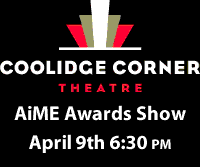

We're back!
The 2012 AIME Awards are here and it's time once again to honor work from Digital Film Making & Video Production, Audio Production, Photography, Media Arts &Animation, Fashion & Retail Management, Advertising, Graphic Design & Interactive Media and General Education
